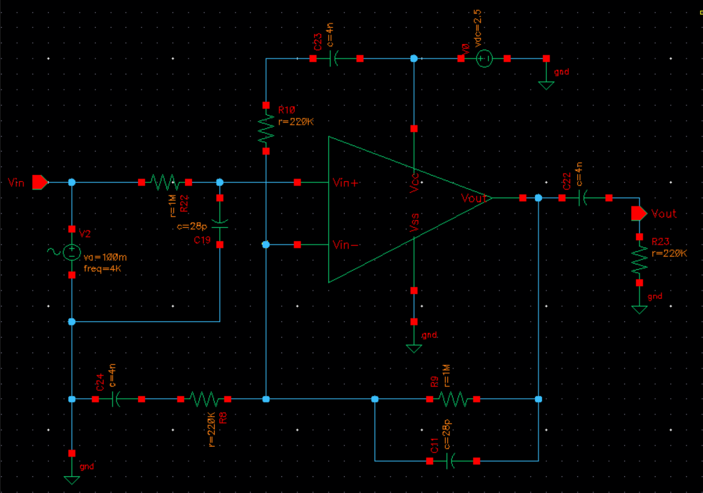
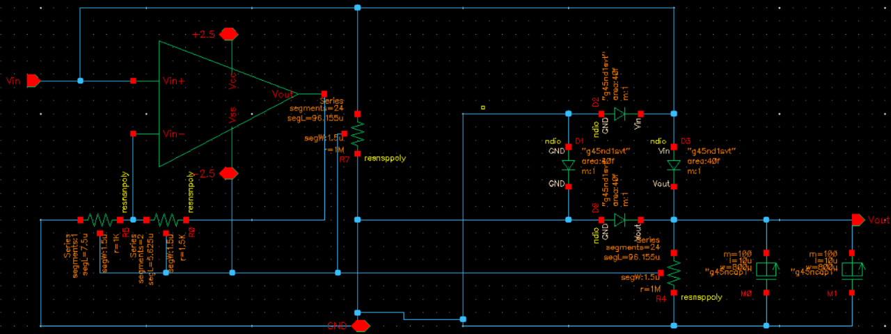

The schematic below is the RC amplifier that I designed for the middle frequency range.
I designed this to be a singular amplifier to acheive second order filtering at both the cutoff frequencies. The second order filtering is achevied by taking advantage of the various signal paths of the amplifier: input, output, and feedback paths.
The schematic above shows my design of the AC-DC converter used to extract the peak amplitudes of the filter's output. The amplifier shown above is not actually included in the converter's design, but it simply there to reperesent the input. The design is a diode-bridge rectifier that takes advantage of the unidirectional current flow of the diodes in order to extract the positive voltage signal. The signal across the diode bridge is then treated with a resistor and capacitor network in order to smooth out the signal.
Through this project and the course in general, I gained in-depth experience using Cadence Virtuoso to create both schematics and layouts for integrated circuits, specifically for signal amplifiers. I also learned how to verify designs using the simulation software of the application, being able to analyze circuits in the frequency and analog domain. Through these simulations I've learned to be able to observe phenomena that occur and be able to pinpoint their causes in the circuit.
For the final report for this proejt with an in-depth analysis on each sub-circuit and their simulations, please download this pdf!